10.2 棧與呼叫慣例
10.2.1 什麼是棧
棧（stack）是現代計算機程式裡最為重要的概念之一，幾乎每一個程式都使用了棧，沒有棧就沒有函式，沒有區域性變數，也就沒有我們如今能夠看見的所有的計算機語言。在解釋為什麼棧會如此重要之前，讓我們來先了解一下傳統的棧的定義：
在經典的電腦科學中，棧被定義為一個特殊的容器，使用者可以將資料壓入棧中（入棧，push），也可以將已經壓入棧中的資料彈出（出棧，pop），但棧這個容器必須遵守一條規則：先入棧的資料後出棧（First In Last Out, FIFO），多多少少像疊成一疊的書（如圖10-2所示）：先疊上去的書在最下面，因此要最後才能取出。
在計算機系統中，棧則是一個具有以上屬性的動態記憶體區域。程式可以將資料壓入棧中，也可以將資料從棧頂彈出。壓棧操作使得棧增大，而彈出操作使棧減小。
在經典的作業系統裡，棧總是向下增長的。在i386下，棧頂由稱為esp的暫存器進行定位。壓棧的操作使棧頂的地址減小，彈出的操作使棧頂地址增大。
圖10-2 現實生活中的棧：疊起來的書 …
圖10-3是一個棧的例項。
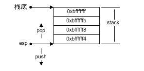
這裡棧底的地址是0xbfffffff，而esp暫存器標明瞭棧頂，地址為0xbffffff4。在棧上壓入資料會導致esp減小，彈出資料使得esp增大。相反，直接減小esp的值也等效於在棧上開闢空間，直接增大esp的值等效於在棧上回收空間。
棧在程式執行中具有舉足輕重的地位。最重要的，棧儲存了一個函式呼叫所需要的維護資訊，這常常被稱為堆疊幀（Stack Frame）或活動記錄（Activate Record）。堆疊幀一般包括如下幾方面內容：
函式的返回地址和引數。
臨時變數：包括函式的非靜態區域性變數以及編譯器自動生成的其他臨時變數。
儲存的上下文：包括在函式呼叫前後需要保持不變的暫存器。
在i386中，一個函式的活動記錄用ebp和esp這兩個暫存器劃定範圍。esp暫存器始終指向棧的頂部，同時也就指向了當前函式的活動記錄的頂部。而相對的，ebp暫存器指向了函式活動記錄的一個固定位置，ebp暫存器又被稱為幀指標（Frame Pointer）。一個很常見的活動記錄示例如圖10-4所示。
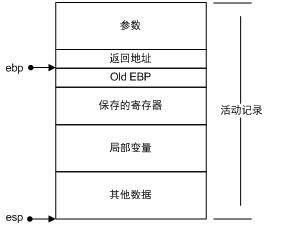
在引數之後的資料（包括引數）即是當前函式的活動記錄，ebp固定在圖中所示的位置，不隨這個函式的執行而變化，相反地，esp始終指向棧頂，因此隨著函式的執行，esp會不斷變化。固定不變的ebp可以用來定位函式活動記錄中的各個資料。在ebp之前首先是這個函式的返回地址，它的地址是ebp-4，再往前是壓入棧中的引數，它們的地址分別是ebp-8、ebp-12等，視引數數量和大小而定。ebp所直接指向的資料是呼叫該函式前ebp的值，這樣在函式返回的時候，ebp可以透過讀取這個值恢複到呼叫前的值。之所以函式的活動記錄會形成這樣的結構，是因為函式呼叫本身是如此書寫的：一個i386下的函式總是這樣呼叫的：
把所有或一部分引數壓入棧中，如果有其他引數沒有入棧，那麼使用某些特定的暫存器傳遞。
把所有或一部分引數壓入棧中，如果有其他引數沒有入棧，那麼使用某些特定的暫存器傳遞。
把當前指令的下一條指令的地址壓入棧中。
跳轉到函式體執行。
其中第2步和第3步由指令call一起執行。跳轉到函式體之後即開始執行函式，而i386函式體的“標準”開頭是這樣的（但也可以不一樣）：
push ebp：把ebp壓入棧中（稱為old ebp）。
mov ebp, esp：ebp = esp（這時ebp指向棧頂，而此時棧頂就是old ebp）。
【可選】sub esp, XXX：在棧上分配XXX位元組的臨時空間。
【可選】push XXX：如有必要，儲存名為XXX暫存器（可重複多個）。
把ebp壓入棧中，是為了在函式返回的時候便於恢複以前的ebp值。而之所以可能要儲存一些暫存器，在於編譯器可能要求某些暫存器在呼叫前後保持不變，那麼函式就可以在呼叫開始時將這些暫存器的值壓入棧中，在結束後再取出。不難想象，在函式返回時，所進行的“標準”結尾與“標準”開頭正好相反：
【可選】pop XXX：如有必要，恢複儲存過的暫存器（可重複多個）。
mov esp, ebp：恢複ESP同時回收區域性變數空間。
pop ebp：從棧中恢複儲存的ebp的值。
ret：從棧中取得返回地址，並跳轉到該位置。
GCC編譯器有一個引數叫做-fomit-frame-pointer可以取消幀指標，即不使用任何幀指標，而是透過esp直接計算幀上變數的位置。這麼做的好處是可以多出一個ebp暫存器供使用，但是壞處卻很多，比如幀上定址速度會變慢，而且沒有幀指標之後，無法準確定位函式的呼叫軌跡（Stack Trace）。所以除非你很清楚你在做什麼，否則請盡量不使用這個引數。
為了加深印象，下面我們反組譯一個函式看看：
int foo()
{
return 123;
}
這個函式反組譯（VC9, i386，Debug模式）得到的結果如圖10-5所示（非粗體部分為除錯用的程式碼）。
我們可以看到頭兩行儲存了舊的ebp，並讓ebp指向當前的棧頂。接下來的一行指令
004113A3 sub esp,0C0h
將棧擴大了0xC0個位元組，其中多出來的空間的值並不確定。這麼一大段多出來的空間可以儲存區域性變數、某些臨時資料以及除錯資訊。在第3步裡，函式將3個暫存器儲存在了棧上。這3個暫存器在函式隨後的執行中可能被修改，所以要先儲存一下這些暫存器原本的值，以便在退出函式時恢複。第4步的程式碼用於除錯。這段組譯大致等價於如下偽程式碼：
edi = ebp – 0x0C;
ecx = 0x30;
eax = 0xCCCCCCCC;
for (; ecx != 0; --ecx, edi+=4)
*((int*)edi) = eax;
可以計算出，0x30 * 4 = 0xC0。所以實際上這段程式碼將記憶體地址從ebp-0xC0到ebp這一段全部初始化為0xCC。恰好就是第2步在棧上分配出來的空間。
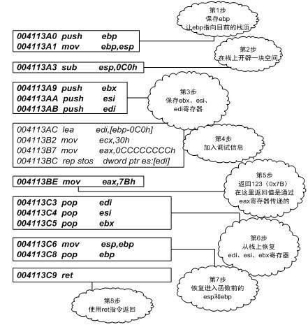
【小知識】
我們在VC下除錯程式的時候，常常看到一些沒有初始化的變數或記憶體區域的值是“燙”。例如下列程式碼：
int main()
{
char p[12];
}
此程式碼中的陣列p沒有初始化，當我們在Debug模式下執行這個程式，在main中設下斷點並監視（watch）陣列p時，就能看見如圖10-6的情形。
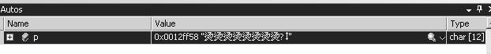
之所以會出現“燙”這麼一個奇怪的字，就是因為Debug模式在第4步裡，將所有的分配出來的棧空間的每一個位元組都初始化為0xCC。0xCCCC（即兩個連續排列的0xCC）的漢字編碼就是燙，所以0xCCCC如果被當作文字就是“燙”。
將未初始化資料設定為0xCC的理由是這樣可以有助於判斷一個變數是否沒有初始化。如果一個指標變數的值是0xCCCCCCCC，那麼我們就可以基本相信這個指標沒有經過初始化。當然這個資訊僅供參考，編譯器檢查未初始化變數的方法並不能以此為證據。有時編譯器還會使用0xCDCDCDCD作為未初始化標記，此時我們就會看到漢字“屯屯”。
在第5步，函式將0x7B（即123）賦值給eax，作為返回值傳出。在函式返回之後，呼叫方可以透過讀取eax暫存器來獲取返回值。接下來的幾步是函式的資源清理階段，從棧中恢複儲存的暫存器、ebp等。最後使用ret指令從函式返回。
以上介紹的是i386標準函式進入和退出指令序列，它們基本的形式為：
push ebp mov ebp, esp sub esp, x [push reg1] ... [push regn]
函式實際內容
[pop regn] ... [pop reg1] mov esp, ebp pop ebp ret
其中x為棧上開闢出來的臨時空間的位元組數，reg1...regn分別代表需要儲存的n個暫存器。方括號部分為可選項。不過在有些場合下，編譯器生成函式的進入和退出指令序列時並不按照標準的方式進行。例如一個滿足如下要求的C函式：
函式被宣告為static（不可在此編譯單元之外訪問）。
函式在本編譯單元僅被直接呼叫，沒有顯示或隱式取地址（即沒有任何函式指標指向過這個函式）。
編譯器可以確信滿足這兩條的函式不會在其他編譯單元內被呼叫，因此可以隨意地修改這個函式的各個方面——包括進入和退出指令序列——來達到最佳化的目的。
【小知識】Hot Patch Prologue
在Windows的函式裡，有些函式盡管使用了標準的進入指令序列，但在這些指令之前卻插入了一些特殊的內容：
mov edi, edi
我們知道這條指令沒有任何用處，事實上也確實如此。這條指令在組譯之後會成為一個佔用2個位元組的機器碼，純粹作為佔位符而存在。使用這條指令開頭的函式整體上看起來是這樣的：
[pop regn] ... [pop reg1] mov esp, ebp pop ebp ret
其中nop指令佔1位元組，本身不做任何操作，也是以佔位符的形式存在，FUNCTION為一個標號，表明函式的入口，本身不佔據任何空間。
被設計成這樣的函式在執行的時候可以很容易被其他函式“替換”掉。在上面的指令序列中呼叫的函式是FUNCTION，但是我們可以做一些改動，就可以在執行時刻修改成呼叫函式REPLACEMENT_FUNCTION。首先我們需要在程式的記憶體空間裡的任意某處寫入REPLACEMENT_FUNCTION的定義:
REPLACEMENT_FUNCTION: push ebp mov ebp, esp ... mov esp, ebp pop ebp ret
然後將原函式的內容稍作修改即可：
LABEL: jmp REPLACEMENT_FUNCTION FUNCTION: ; 函數的實際入口 jmp LABEL push ebp ; 標準的進入序列 mov ebp, esp
在這裡，我們首先將佔用5個位元組的5個nop指令覆蓋為一個jmp指令（恰好5位元組），然後將佔用兩個位元組的mov edi, edi指令替換為另一個jmp指令。為什麼第二個jmp指令只佔用2個位元組呢？因為這個jmp的目標距離這個jmp指令本身非常近，因此這個jmp指令就被組譯器翻譯成了一個“近跳”指令，這種指令只佔用2個位元組，但只能跳躍至當前地址前後127位元組範圍的目標位置。在經過這樣的替換之後，原函式的呼叫就被轉換為新函式的呼叫。
這裡替換的機制往往可以用來實現一種叫做鉤子（Hook）的技術，允許使用者在某些時刻截獲特定函式的呼叫，如圖10-7所示。
10.2.2 呼叫慣例
經過前面的分析和討論，我們大致知道了函式呼叫時實際發生的事件。從這樣的資訊裡能夠發現一個現象，那就是函式的呼叫方和被呼叫方對函式如何呼叫有著統一的理解，例如它們雙方都一致地認同函式的引數是按照某個固定的方式壓入棧內。如果不這樣的話，函式將無法正確執行。這就好比我們說話時需要雙方對同一個聲音（語音）有著一致的理解一樣，否則就會產生誤解，如圖10-7所示。
圖10-7 函式呼叫慣例猶如語言 …
假設有一個foo函式：
int foo(int n, float m)
{
int a = 0, b = 0;
...
}
如果函式的呼叫方在傳遞引數時先壓入引數n，再壓入引數m，而foo函式卻認為其呼叫方應該先壓入引數m，後壓入引數n，那麼不難想象foo內部的m和n的值將會被交換。如圖10-8所示。
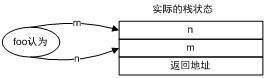
再者如果函式的呼叫方決定利用暫存器傳遞引數，而函式本身卻仍然以為引數透過棧傳遞，那麼顯然函式無法獲取正確的引數。因此，毫無疑問函式的呼叫方和被呼叫方對於函式如何呼叫需要有一個明確的約定，只有雙方都遵守同樣的約定，函式才能被正確地呼叫，這樣的約定就稱為呼叫慣例（Calling Convention）。一個呼叫慣例一般會規定如下幾個方面的內容。
函式引數的傳遞順序和方式
函式引數的傳遞有很多種方式，最常見的一種是透過棧傳遞。函式的呼叫方將引數壓入棧中，函式自己再從棧中將引數取出。對於有多個引數的函式，呼叫慣例要規定函式呼叫方將引數壓棧的順序：是從左至右，還是從右至左。有些呼叫慣例還允許使用暫存器傳遞引數，以提高效能。
棧的維護方式
在函式將引數壓棧之後，函式體會被呼叫，此後需要將被壓入棧中的引數全部彈出，以使得棧在函式呼叫前後保持一致。這個彈出的工作可以由函式的呼叫方來完成，也可以由函式本身來完成。
名字修飾（Name-mangling）的策略
為了連結的時候對呼叫慣例進行區分，呼叫管理要對函式本身的名字進行修飾。不同的呼叫慣例有不同的名字修飾策略。
事實上，在C語言裡，存在著多個呼叫慣例，而預設的呼叫慣例是cdecl。任何一個沒有顯式指定呼叫慣例的函式都預設是cdecl慣例。對於函式foo的宣告，它的完整形式是：
int _cdecl foo(int n, float m)
_cdecl是非標準關鍵字，在不同的編譯器裡可能有不同的寫法，例如在gcc裡就不存在_cdecl這樣的關鍵字，而是使用__attribute__((cdecl))。
cdecl這個呼叫慣例是C語言預設的呼叫慣例，它的內容如表10-1所示。
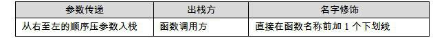
因此foo被修飾之後就變為_foo。在呼叫foo的時候，按照cdecl的引數傳遞方式，具體的堆疊操作如下。
將m壓入棧。
將n壓入棧。
呼叫_foo，此步又分為兩個步驟：
a) 將返回地址（即呼叫_foo之後的下一條指令的地址）壓入棧；
b) 跳轉到_foo執行。
當函式返回之後：sp = sp + 8（引數出棧，由於不需要得到出棧的資料，所以直接調整棧頂位置就可以了）。因此進入foo函式之後，棧上大致是如圖10-9所示。
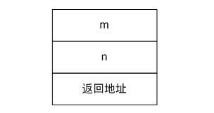
然後在foo裡面要儲存一係列的暫存器，包括函式呼叫方的ebp暫存器，以及要為a和b兩個區域性變數分配空間（參見本節開頭）。最終的棧的構成會如圖10-10所示。
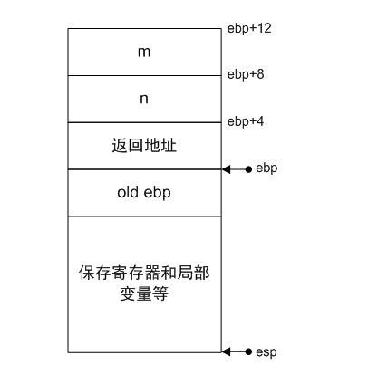
對於不同的編譯器，由於分配區域性變數和儲存暫存器的策略不同，這個結果可能有出入。在以上佈局中，如果想訪問變數n，實際的地址是使用ebp+8。當foo返回的時候，程式首先會使用pop恢複儲存在棧裡的暫存器，然後從棧裡取得返回地址，返回到呼叫方。呼叫方再調整ESP將堆疊恢複。因此有如下程式碼：
void f(int x, int y)
{
...
return;
}
int main()
{
f(1, 3);
return 0;
}
實際執行的操作如圖10-11所示。
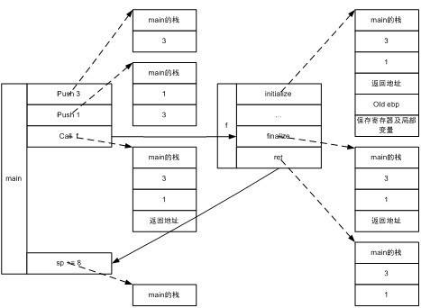
其中虛線指向該指令執行後的棧狀態，實線表示程式的跳轉狀況。同樣，對於多級呼叫，如果我們有如下程式碼：
void f(int y)
{
printf("y=%d", y);
}
int main()
{
int x = 1;
f(x);
return 0;
}
這些程式碼形成的堆疊格局如圖10-12所示。
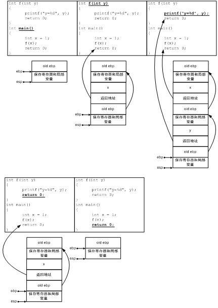
圖10-12的箭頭表示地址的指向關係，而帶下劃線的程式碼表示當前執行的程式碼。除了cdecl呼叫慣例之外，還存在很多別的呼叫慣例，例如stdcall、fastcall等。表10-2介紹了幾項主要的呼叫慣例的內容。
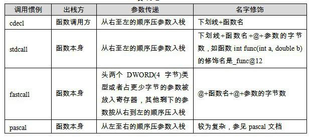
此外，不少編譯器還提供一種稱為naked call的呼叫慣例，這種呼叫慣例用在特殊的場合，其特點是編譯器不產生任何保護暫存器的程式碼，故稱為naked call。對於C++語言，以上幾種呼叫慣例的名字修飾策略都有所改變，因為C++支援函式過載以及名稱空間和成員函式等等，因此實際上一個函式名可以對應多個函式定義，那麼上面提到的名字修飾策略顯然是無法區分各個不同同名函式定義的。所以C++自己有更加複雜的名字修飾策略，我們在前面的章節也已經遇到過了。最後，C++自己還有一種特殊的呼叫慣例，稱為thiscall，專用於類成員函式的呼叫。其特點隨編譯器不同而不同，在VC裡是this指標存放於ecx暫存器，引數從右到左壓棧，而對於gcc、thiscall和cdecl完全一樣，只是將this看作是函式的第一個引數。
【小實驗】
我們可以讓函式的呼叫方使用錯誤的呼叫慣例，看看能發生什麼事情：
//a.c
void __fastcall foo(int, int);
int main()
{
foo(1, 3);
return 0;
}
//b.c
#include <stdio.h>
void __cdecl foo(int a, int b)
{
printf("a=%d,b=%d", a, b);
}
這裡有2個.c檔案，分別定義和呼叫了函式foo，但在a.c中，呼叫foo所使用的呼叫慣例是錯誤的fastcall。編譯並連結這兩個.c檔案會發現連結失敗，因為在a.c中，foo函式被修飾為@foo@8，而在b.c中，foo函式被修飾為_foo。為了使得程式能夠執行，我們可以把b.c單獨編譯為DLL（或so），並匯出符號foo，而main則載入b.c匯出的DLL（或so），並匯入符號foo。（具體步驟在動態連結部分已經有詳細的說明，這裡就不再細說。）如此處理之後程式就可以執行了，執行的結果（可能）是：
a=8458637,b=1
可見引數沒有正確的傳入。
10.2.3 函式返回值傳遞
除了引數的傳遞之外，函式與呼叫方的互動還有一個渠道就是返回值。在第287頁的例子中，我們發現eax是傳遞返回值的通道。函式將返回值儲存在eax中，返回後函式的呼叫方再讀取eax。但是eax本身只有4個位元組，那麼大於4位元組的返回值是如何傳遞的呢？
對於返回5～8位元組物件的情況，幾乎所有的呼叫慣例都是採用eax和edx聯合返回的方式進行的。其中eax儲存返回值要低4位元組，而edx儲存返回值要高1～4位元組。而對於超過8位元組的返回型別，我們可以用下列程式碼來研究：
typedef struct big_thing
{
char buf[128];
}big_thing;
big_thing return_test()
{
big_thing b;
b.buf[0] = 0;
return b;
}
int main()
{
big_thing n = return_test();
}
這段程式碼裡的return_test的返回值型別是一個長度為128位元組的結構，因此無論如何也不可能直接用過eax傳遞。讓我們首先來反組譯（MSVC9）一下main函式，結果如下：
big_thing n = return_test(); 00411498 lea eax,[ebp-1D0h] 0041149E push eax 0041149F call _return_test 004114A4 add esp,4 004114A7 mov ecx,20h 004114AC mov esi,eax 004114AE lea edi,[ebp-88h] 004114B4 rep movs dword ptr es:[edi],dword ptr [esi]
其中第二行：
00411498 lea eax,[ebp-1D0h]
將棧上的一個地址(ebp-1D0h)儲存在eax裡，接著下一行：
push eax
將這個地址壓入棧中然後就緊接著呼叫return_test函式。這從形式上無疑是將資料ebp - 1D0h作為引數傳入return_test函式，然而return_test是沒有引數的，因此我們可以將這個資料稱為是“隱含引數”。換句話說，return_test的原型實際是：
big_thing return_test(void* addr);
這段組譯最後4行（斜體部分）是一個整體，我們可以想象在函式返回之後，函式的呼叫方需要獲取函式的返回物件並對n賦值。rep movs是一個複合指令，它的大致意義是重複movs指令直到ecx暫存器為0。於是“rep movs a, b”的意思就是將b指向位置上的若幹個雙字（4位元組）複製到由a指向的位置上，複製雙字的個數由ecx指定，實際上這句複合指令的含義相當於memcpy（a, b, ecx * 4）。所以說，最後4行的含義相當於：
memcpy(ebp-88h, eax, 0x20 * 4)
即將eax指向位置上的0x20個雙字複製到ebp-88h的位置上。毫無疑問，ebp-88h這個地址就是變數n的地址，如果有所懷疑，可以比較一下n的地址和ebp-88h的值即可確信這一點。而0x20個雙字就是128個位元組，正是big_thing的大小。現在我們可以將這段組譯略微還原了：
return_test(ebp-1D0h) memcpy(&n, (void*)eax, sizeof(n));
可見，return_test返回的結構體仍然是由eax傳出的，只不過這次eax儲存的是結構體的指標。那麼return_test具體是如何返回一個結構體的呢？讓我們來看看return_test的實現：
big_thing return_test()
{
...
big_thing b;
b.buf[0] = 0;
004113C8 mov byte ptr [ebp-88h],0
return b;
004113CF mov ecx,20h
004113D4 lea esi,[ebp-88h]
004113DA mov edi,dword ptr [ebp+8]
004113DD rep movs dword ptr es:[edi],dword ptr [esi]
004113DF mov eax,dword ptr [ebp+8]
}
在這裡，ebp-88h儲存的是return_test的區域性變數b。根據rep movs的功能，加粗的4條指令可以翻譯成如下的程式碼：
memcpy([ebp+8]，&b, 128);
在這裡，[ebp+8]指的是*(void**)(ebp+8)，即將地址ebp+8上儲存的值作為地址，由於ebp實際指向棧上儲存的舊的ebp，因此ebp+4指向壓入棧中的返回地址，ebp+8則指向函式的引數。而我們知道，return_test是沒有真正的引數的，只有一個“偽引數”由函式的呼叫方悄悄地傳入，那就是ebp-1D0h（這裡的ebp是return_test呼叫前的ebp）這個值。換句話說，[ebp+8]=old_ebp-1D0h。
那麼到底main函式裡的ebp-1D0h是什麼內容呢？我們來看看main函式一開始初始化的組合語言程式碼：
int main()
{
00411470 push ebp
00411471 mov ebp, esp
00411473 sub esp,1D4h
00411479 push ebx
0041147A push esi
0041147B push edi
0041147C lea edi,[ebp-1D4h]
00411482 mov ecx,75h
00411487 mov eax,0CCCCCCCCh
0041148C rep stos dword ptr es:[edi]
0041148E mov eax,dword ptr [___security_cookie (417000h)]
00411493 xor eax,ebp
00411495 mov dword ptr [ebp-4],eax
我們可以看到main函式在儲存了ebp之後，就直接將棧增大了1D4h個位元組，因此ebp-1D0h就正好落在這個擴大區域的末尾，而區間[ebp-1D0h, ebp-1D0h + 128)也正好處於這個擴大區域的內部。至於這塊區域剩下的內容，則留作它用。下面我們就可以把思路理清了：
首先main函式在棧上額外開闢了一片空間，並將這塊空間的一部分作為傳遞返回值的臨時物件，這裡稱為temp。
將temp物件的地址作為隱藏引數傳遞給return_test函式。
return_test函式將資料複製給temp物件，並將temp物件的地址用eax傳出。
return_test返回之後，main函式將eax指向的temp物件的內容複製給n。
整個流程如圖10-13所示。
也可以用偽程式碼表示如下：
void return_test(void *temp)
{
big_thing b;
b.buf[0] = 0;
memcpy(temp, &b, sizeof(big_thing));
eax = temp;
}
int main()
{
big_thing temp;
big_thing n;
return_test(&temp);
memcpy(&n, eax, sizeof(big_thing));
}
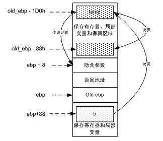
毋庸置疑，如果返回值型別的尺寸太大，C語言在函式返回時會使用一個臨時的棧上記憶體區域作為中轉，結果返回值物件會被複製兩次。因而不到萬不得已，不要輕易返回大尺寸的物件。為了不失一般性，我們再來看看在Linux下使用gcc 4.03編譯出來的程式碼返回大尺寸物件的情況。測試的程式碼仍然使用以下程式碼：
typedef struct big_thing
{
char buf[128];
}big_thing;
big_thing return_test()
{
big_thing b;
b.buf[0] = 0;
return b;
}
int main()
{
big_thing n = return_test();
}
下面是其main函式的部分反組譯：
80483bd: 8d 85 f8 fe ff ff lea eax , [ebp-107h] 80483c3: 89 04 24 mov [esp], eax 80483c6: e8 95 ff ff ff call 8048360 <return_test> 80483cb: 83 ec 04 sub esp, 4 80483ce: 8d 8d 78 ff ff ff lea ecx, [ebp-87h] 80483d4: 8d 95 f8 fe ff ff lea edx , [ebp -107h] 80483da: b8 80 00 00 00 mov eax ,80h 80483df: 89 44 24 08 mov [esp+8h], eax 80483e3: 89 54 24 04 mov [esp+4h], edx 80483e7: 89 0c 24 mov [esp], ecx 80483ea: e8 c1 fe ff ff call 80482b0 <memcpy@plt>
與MSVC9的反組譯對比，可以發現，ebp-0x107的位置上是臨時物件temp的地址，而ebp-0x87則是n的地址。這樣，這段程式碼和用MSVC9反組譯得到的程式碼是一樣的，都是透過棧上的隱藏引數傳遞臨時物件的地址，只不過在將臨時物件寫回到實際的目標物件n的時候，MSVC9使用了rep movs指令，而gcc呼叫了memcpy函式。可見在這裡VC和gcc的思路大同小異。最後來看看如果函式返回一個C++物件會如何：
#include <iostream>
using namespace std;
struct cpp_obj
{
cpp_obj()
{
cout << "ctor\n";
}
cpp_obj(const cpp_obj& c)
{
cout << "copy ctor\n";
}
cpp_obj& operator=(const cpp_obj& rhs)
{
cout << "operator=\n";
return *this;
}
~cpp_obj()
{
cout << "dtor\n";
}
};
cpp_obj return_test()
{
cpp_obj b;
cout << "before return\n";
return b;
}
int main()
{
cpp_obj n;
n = return_test();
}
在沒有開啟任何最佳化的情況下，直接執行一下，可以發現程式輸出為：
ctor ctor before return copy ctor dtor operator= dtor dtor
我們可以看到在函式返回之後，進行了一個複製建構函式的呼叫，以及一次operator=的呼叫，也就是說，仍然產生了兩次複製。因此C++的物件同樣會產生臨時物件。
返回物件的複製情況完全不具備可移植性，不同的編譯器產生的結果可能不同。
我們可以反組譯main函式來確認這一點：
n = return_test(); 00411C2C lea eax,[ebp-0DDh] 00411C32 push eax 00411C33 call return_test (4111F4h) 00411C38 add esp,4 00411C3B mov dword ptr [ebp-0E8h],eax 00411C41 mov ecx,dword ptr [ebp-0E8h] 00411C47 mov dword ptr [ebp-0ECh],ecx 00411C4D mov byte ptr [ebp-4],1 00411C51 mov edx,dword ptr [ebp-0ECh] 00411C57 push edx 00411C58 lea ecx,[ebp-11h] 00411C5B call cpp_obj::operator= (41125Dh) 00411C60 mov byte ptr [ebp-4],0 00411C64 lea ecx,[ebp-0DDh] 00411C6A call cpp_obj::~cpp_obj (41119Ah)
可以看出，這段組譯與之前的版本結構是一致的，臨時物件的地址仍然透過隱藏引數傳遞給函式，只不過最後沒有使用rep movs來複製資料，而是呼叫了函式的operator=來進行。同時，這裡還對臨時物件呼叫了一次解構函式。
函式傳遞大尺寸的返回值所使用的方法並不是可移植的，不同的編譯器、不同的平台、不同的呼叫慣例甚至不同的編譯引數都有權力採用不同的實現方法。因此盡管我們實驗得到的結論在MSVC和gcc下驚人地相似，讀者也不要認為大物件傳遞只有這一種情況。
函式傳遞大尺寸的返回值所使用的方法並不是可移植的，不同的編譯器、不同的平台、不同的呼叫慣例甚至不同的編譯引數都有權力採用不同的實現方法。因此盡管我們實驗得到的結論在MSVC和gcc下驚人地相似，讀者也不要認為大物件傳遞只有這一種情況。
【小知識】
聲名狼藉的C++返回物件
正如我們看到的，在C++裡返回一個物件的時候，物件要經過2次複製建構函式的呼叫才能夠完成返回物件的傳遞。1次複製到棧上的臨時物件裡，另一次把臨時物件複製到儲存返回值的物件裡。在某些編譯器裡，返回一個物件甚至要經過更多的步驟。
這樣帶來的惡果就是返回一個較大物件會有非常多的額外開銷。因此C++程式中都盡量避免返回物件。此外，為了減小返回物件的開銷，C++提出了返回值最佳化（Return Value Optimization， RVO）這樣的技術，可以將某些場合下的物件複製減少1次，例如：
cpp_obj return_test()
{
return cpp_obj();
}
在這個例子中，構造一個cpp_obj物件會呼叫一次cpp_obj的建構函式，在返回這個物件時，還會呼叫cpp_obj的複製建構函式。C++的返回值最佳化可以將這兩步合並，直接將物件構造在傳出時使用的臨時物件上，因此可以減少一次複製過程。